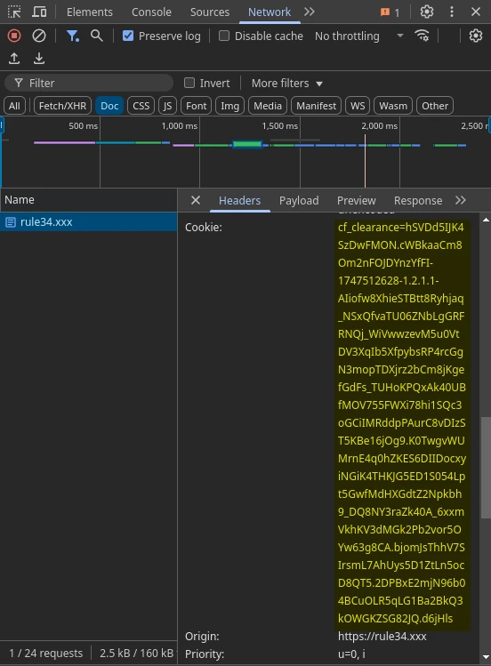
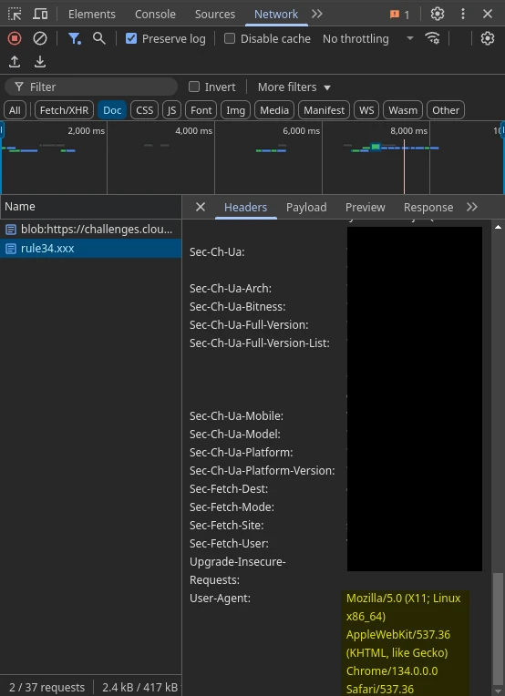

How to clear Rule34 captcha defenses
The rule34.xxx interactive (PHP) site occasionally enables Cloudflare captcha defenses, to limit non-human access to the interactive site. As of writing (2025-05-17), captcha defenses are enabled.
The api.rule34.xxx REST API endpoint does not have captcha defenses. Workflows in the rule34Py module prefer to use the REST API endpoint wherever possible. But not all features of the interactive site are supported by the REST endpoint, and so the module defaults to parsing the interactive site’s HTML.
In order to enable these interactive workflows, while providing at least some respect to the site’s captcha defense, rule34Py allows the user to: complete the captcha defense manually in their browser, and then give their captcha clearance to the python module to use in subsequent interactions.
Note that the module will rate-limit requests to the interactive site to 1 request per second, as a further courtesy to the site owners. We also recommend avoiding these workflows entirely in your application design, out of respect.
Reference the rule34Py.rule34Py class documentation for an indication of which workflows have these limits.
Clearing the defenses
Use any reasonable browser with javascript enabled to open any URL to the https://rule34.xxx site.
Open your browser’s Network Inspector feature (or equivalent).
Hint
F12 in Firefox and Chrome
With the inspector open and capturing transactions, complete the captcha test.
Use the network inspector to find the document transaction where the rule34.xxx homepage (or really any page) is returned to you. In the transaction’s
Headers > Request Headers > Cookiekey. It should containcf_clearance=...in its value. Copy and store the total value of the cf_clearance (it should be ~450 characters).Use the network inspector to find your browser’s
Headers > Request Headers > User-Agentvalue. Copy and store the total value of this header.Issue your clearance and user-agent to the rule34Py client class using one of the following methods.
Important
It is necessary to capture and set both your
user_agentandcf_clearancevalue. When Cloudflare issues you a cf_clearance, it is only valid for the User-Agent (of your browser) that completed the captcha test.In your python module, set the value of
rule34Py.cf_clearanceto your token value.
import rule34Py as r34 client = r34.rule34Py() client.cf_clearance = # ${token_value} client.user_agent = # ${user_agent} # Some code that uses the rule34Py client.
Set your execution environment’s
R34_CAPTCHA_CLEARANCEvariable to your token value.
export R34_CAPTCHA_CLEARANCE=${token_value} export R34_USER_AGENT=${user_agent} # some script or commands that use rule34Py
Note
Consider that the lifetime of your captcha clearance is the same as in the browser. Do not rely on this feature for multi-day operations or code that you are sharing with others.